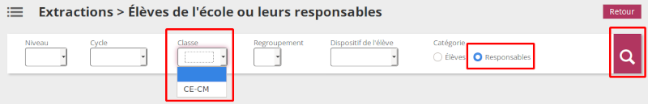

Réalise une fiche de continuité pédagogique depuis une exportation ONDE (fichier CSV).
Dans ONDE > Listes et documents > Extractions > Elèves de l'école et leurs responsables.
Choisir, pour l'instant, le tri "Classe" (travailler avec une classe à la fois) et la catégorie "Responsables".

IMPORTANT En phase de test : pour l'instant n'exporter qu'une classe à la fois.
Les fichiers temporaires chargés seront automatiquement supprimés du serveur à la fin de l'exécution du script.
Pour l'instant, testé qu'avec une exportation csv par classe. A améliorer par la suite.
Tableau de synthèse avec mise en page minimaliste.
En cas de soucis / contact : cyrille.biot@AROBASE@ac-lille.fr [@AROBASE@ à remplacer par @.
Source source du script : GIT